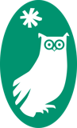
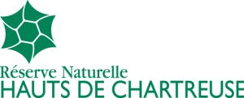
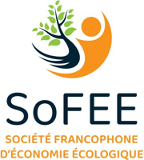
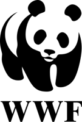

Scientific commitments


Member since February 2026

French-speaking Society for Ecological Economics (SoFEE)Communication working group, since 2026- Global Environmental Change
- International Journal of Limnology
- Annals of Tourism Research
- Climate Services
- Journal of Destination Marketing & Management
Expert assignments

WWF FranceReview of existing figures (scientific literature and institutional reports), inventory of usable databases and possible cross-analyses, and prioritised avenues for quantitative work.
Estimation of the avoidance costs caused by pesticide contamination of tap water, comparison with the diffuse pollution charge, and analysis of territorial and social disparities.
Design and writing of a methodological kit based on fifteen case studies in five parks (Chartreuse, Bauges, Haut-Jura, Vercors, Baronnies provençales): guidelines, toolbox and checklist for stakeholder dialogue. Project funded by the Transitions call of the Federation of Regional Nature Parks, scientific coordination by the EDYTEM laboratory (UMR 5204, CNRS and Université Savoie Mont Blanc).
Literature review on conservation issues related to rising water demand for pastoralism, in the context of climate change.